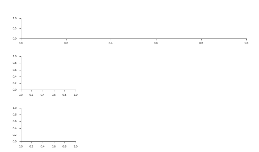

Note
Go to the end to download the full example code.
Noise Parameter Sweep — overview + dense colour-mapped tiles#
Each tunable knob of the realistic noise model acts on a specific part of the spectrum. This example lays the knobs out as a two-row figure:
a top overview PSD (baseline noise in black) annotated with coloured markers showing which frequency region each knob touches;
a 2x3 grid of zoom tiles below, each focused on its knob’s active region. Every tile sweeps its knob through many values, drawn as a dense family of curves shaded by a white → knob-colour colormap (with a matching colourbar), plus the baseline as a black reference — the same treatment used for the motor-neuron property sweeps.
The same colour is reused per knob — overview highlight, zoom-tile title, the tile’s left spine, and the colormap — so the link between “where it acts” and “what it does” is unambiguous.
Imports and publication style#
from pathlib import Path
import matplotlib.pyplot as plt
import matplotlib.colors as mcolors
import matplotlib.gridspec as gridspec
import numpy as np
import seaborn as sns
from matplotlib.ticker import FuncFormatter, NullFormatter, ScalarFormatter
from scipy import signal as sig
from scipy.ndimage import gaussian_filter1d
from myogen import set_random_seed
from myogen.utils import generate_realistic_noise
# Clean, Nature-style theme: white canvas, thin black spines, sans-serif,
# no heavy grid.
plt.rcParams.update(
{
"figure.facecolor": "white",
"axes.facecolor": "white",
"savefig.facecolor": "white",
"font.family": "sans-serif",
"font.sans-serif": ["Arial", "Helvetica", "DejaVu Sans"],
"font.size": 4.5,
"axes.titlesize": 5.5,
"axes.labelsize": 4.5,
"xtick.labelsize": 4.0,
"ytick.labelsize": 4.0,
"legend.fontsize": 4.0,
"axes.linewidth": 0.5,
"axes.edgecolor": "#222222",
"axes.grid": False,
"axes.spines.top": False,
"axes.spines.right": False,
"lines.linewidth": 0.6,
"lines.solid_capstyle": "round",
"lines.solid_joinstyle": "round",
"xtick.direction": "out",
"ytick.direction": "out",
"xtick.major.width": 0.5,
"ytick.major.width": 0.5,
"xtick.major.size": 2.0,
"ytick.major.size": 2.0,
"legend.frameon": True,
"legend.framealpha": 0.9,
"legend.edgecolor": "#cccccc",
"svg.fonttype": "none",
}
)
save_path = Path("./results")
save_path.mkdir(exist_ok=True, parents=True)
Baseline and sweep specification#
FS_HZ = 10240.0
DURATION_S = 20.0
N_SAMPLES = int(FS_HZ * DURATION_S)
# How many curves per knob — dense enough to read as a continuous gradient.
N_SWEEP = 15
# Sweep-curve line width.
CURVE_LW = 0.8
# Gaussian smoothing (in PSD bins) for broadband tiles, so the noisy curves
# become clean nested lines that separate clearly. Spike tiles stay raw.
SMOOTH_SIGMA = 4.0
BASELINE = dict(
noise_floor_uv=4.0,
spectral_slope=-0.5,
excess_kurtosis=3.0,
powerline_hz=50.0,
powerline_amplitude=0.1,
powerline_harmonic_ratios=None,
peak_hz=1000.0,
analog_hpf_hz=10.0,
)
# Per-knob: display label, colour, colourbar unit label, tick formatter,
# the swept range as (lo, hi, scale) — "log" or "linear" — for both the
# sweep values and the colour normalisation, the zoom x-range (Hz, None
# for full band), the x-axis scale, and an indicator string describing the
# region kind (used to draw the matching highlight on the overview).
# Order matches the left-to-right order of the callouts in panel a
# (by frequency): HPF → powerline → noise floor → mid-band peak → HF slope.
SWEEPS = [
{
"knob": "analog_hpf_hz",
"label": "Analog high-pass corner (Hz)",
"color": "#d62728", # distinct red — set apart from the purple powerline pair
"low_color": "#7f7f7f", # gray (low) ↔ red (high accent)
"curve_lw": 0.8,
"cbar_label": "Hz",
"fmt": "{:.0f}",
"sweep": (1.0, 100.0, "log"),
"zoom_xlim": (2.0, 200.0),
"xscale": "log",
"region_kind": "axvspan_lowfreq", # translucent band 2-30 Hz
},
{
"knob": "powerline_amplitude",
"label": "Powerline amplitude (× broadband)",
"color": "#7e3ca2", # deep purple — both powerline knobs share this family
"low_color": "#17becf", # teal (low) ↔ purple (high accent)
"smooth": True,
"smooth_sigma": 1.5, # gentler than the broadband tiles (keeps harmonic peaks sharp)
"cbar_label": "frac",
"fmt": "{:g}",
# Plot each curve ÷ the baseline PSD on a log y-axis. The shared
# broadband floor cancels to a flat 1.0; only the powerline harmonics
# deviate — up for higher amplitude (purple), down for lower (green) —
# so the small-amplitude effect is no longer crushed by the floor.
"relative": True,
# Stack vertically (above 0.1 on top, below 0.1 on bottom) with
# independent y, so the small green deviations get their own row.
"split": "value",
"split_dir": "v",
# Multiplicative knob → log colour scale. Low end is 0.03 (not lower):
# below that a 50 Hz line sits under the broadband floor and adds
# nothing visible, so the low (green) curves would collapse onto it.
"sweep": (0.03, 1.0, "log"),
"zoom_xlim": (30.0, 300.0),
"xscale": "log",
"region_kind": "line_comb", # vertical lines at 50/100/150
},
{
"knob": "powerline_hz",
"label": "Powerline fundamental (Hz)",
"color": "#7e3ca2", # same purple as powerline_amplitude — matched powerline pair
"low_color": "#17becf", # teal (low) ↔ purple (high accent)
"cbar_label": "Hz",
"fmt": "{:.0f}",
"sweep": (40.0, 60.0, "linear"), # spike sweeps across the mains band, baseline 50 centred
# Rendered as TWO sub-panels (below / above 50 Hz) so the negative and
# positive shifts don't tangle together — handled in its own block.
"split": "freq",
"n_sweep": 20, # per sub-panel (0.5 Hz spacing)
"curve_lw": 0.8,
# Narrow 40–60 Hz window needs a fine FFT to resolve individual Hz
# (default 2.5 Hz bins would merge adjacent fundamentals).
"nperseg": 20480,
"zoom_xlim": (40.0, 60.0),
"xscale": "linear",
"region_kind": "line_shift_arrow", # 50 → 60 Hz arrow
},
{
"knob": "noise_floor_uv",
"label": "Noise floor (µV RMS)",
"color": "#1f77b4",
"low_color": "#d62728", # red (low) ↔ blue (high accent)
"curve_lw": 0.8,
"cbar_label": "µV RMS",
"fmt": "{:.0f}",
"sweep": (1.0, 32.0, "log"),
"zoom_xlim": None, # full band
"xscale": "log",
"region_kind": "rms_arrow", # vertical double-arrow on the right
},
{
"knob": "peak_hz",
"label": "Mid-band peak frequency (Hz)",
"color": "#2ca02c",
"low_color": "#8c564b", # brown (low) ↔ green (high accent)
"reverse_z": True, # draw high→low so the near-baseline curves sit on top
"cbar_label": "Hz",
"fmt": "{:.0f}",
"sweep": (150.0, 5000.0, "log"),
# Split below/above the baseline peak: the broad peaks overlap, so one
# colour would paint over the other (same as the slope tile).
"split": "value",
"zoom_xlim": (100.0, 5000.0),
"xscale": "log",
"x_unit": "kHz",
"region_kind": "axvspan_peak", # translucent band 200-3000 Hz
},
{
"knob": "spectral_slope",
"label": "High-frequency spectral slope",
"color": "#ff7f0e",
"low_color": "#7e3ca2", # purple (low) ↔ orange (high accent)
"cbar_label": "slope",
"fmt": "{:+.1f}",
"sweep": (-3.0, 3.0, "linear"),
# Split below/above the baseline slope: the two fans overlap heavily
# around the peak, so one colour would paint over the other.
"split": "value",
"zoom_xlim": (500.0, FS_HZ / 2.0),
"xscale": "log",
"x_unit": "kHz",
"region_kind": "diagonal_arrow", # diagonal arrow over 1–5 kHz
},
]
def _make_noise(prof: dict, *, seed: int = 0) -> np.ndarray:
set_random_seed(seed)
return generate_realistic_noise(
N_SAMPLES,
FS_HZ,
noise_rms=prof["noise_floor_uv"],
spectral_slope=prof["spectral_slope"],
excess_kurtosis=prof["excess_kurtosis"],
powerline_hz=prof["powerline_hz"],
powerline_amplitude=prof["powerline_amplitude"],
powerline_harmonic_ratios=prof["powerline_harmonic_ratios"],
peak_hz=prof["peak_hz"],
analog_hpf_hz=prof["analog_hpf_hz"],
)
def _psd(noise: np.ndarray, nperseg: int = 4096) -> tuple[np.ndarray, np.ndarray]:
nperseg = min(N_SAMPLES, nperseg)
freqs, psd = sig.welch(
noise,
fs=FS_HZ,
nperseg=nperseg,
noverlap=int(nperseg * 0.75),
average="median",
)
return freqs, 10.0 * np.log10(np.maximum(psd, 1e-30))
def _sweep_values(lo: float, hi: float, n: int, scale: str) -> np.ndarray:
return np.geomspace(lo, hi, n) if scale == "log" else np.linspace(lo, hi, n)
def _smooth(psd_db: np.ndarray, sigma: float) -> np.ndarray:
"""Gaussian-smooth a dB curve (no-op when sigma is 0)."""
return gaussian_filter1d(psd_db, sigma=sigma, mode="nearest") if sigma else psd_db
def _scaled(v, scale: str):
"""Map values into the domain the colour norm lives in (log10 for log)."""
return np.log10(v) if scale == "log" else v
def _diverging_cmap(low_color: str, high_color: str) -> mcolors.Colormap:
"""Baseline-centred diverging map from an explicit (low, high) colour pair.
Near-black centre → light tint of each hue at the extremes, so curves grow
OUT of the black baseline line and fade lighter as they deviate. Using
explicit colours (rather than a named ColorBrewer map) lets every tile pick
a fully distinct hue pair so no two tiles look alike.
"""
white = np.array([1.0, 1.0, 1.0])
dark = np.array([0.10, 0.10, 0.10]) # near-black centre
lo_hue = np.array(mcolors.to_rgb(low_color))
hi_hue = np.array(mcolors.to_rgb(high_color))
lo_end = lo_hue + (white - lo_hue) * 0.5 # light tint at low extreme
hi_end = hi_hue + (white - hi_hue) * 0.5
return mcolors.LinearSegmentedColormap.from_list("div", [lo_end, lo_hue, dark, hi_hue, hi_end])
def _visible_minmax(curves: list, xlim: tuple) -> tuple[float, float]:
"""Min/max dB across all curves inside the visible x-window."""
chunks = []
for f, p in curves:
m = (f >= xlim[0]) & (f <= xlim[1])
if np.any(m):
chunks.append(p[m])
allv = np.concatenate(chunks)
return float(allv.min()), float(allv.max())
def _padded_ylim(
lo: float, hi: float, *, frac: float = 0.06, floor: float = 1.0
) -> tuple[float, float]:
"""Symmetric margin around a data range (fraction of span, min ``floor``)."""
margin = max((hi - lo) * frac, floor)
return lo - margin, hi + margin
# Precompute baseline PSD — same in every tile.
freqs_base, psd_db_base = _psd(_make_noise(BASELINE))
Random seed set to 0.
Figure layout: 3-row gridspec (overview + 2 rows of zoom tiles)#
fig = plt.figure(figsize=(5.102, 3.0))
gs = gridspec.GridSpec(3, 3, figure=fig, height_ratios=[0.6, 1.0, 1.0], hspace=0.62, wspace=0.55)
ax_overview = fig.add_subplot(gs[0, :])
# Build the six tile axes. The "split" knob (powerline fundamental) keeps its
# grid cell but is rendered as two sub-panels later, so its slot is a None
# placeholder here and the cell is stashed for that dedicated block.
zoom_axes: list = []
split_cells: dict = {}
for i in range(6):
cell = gs[1 + i // 3, i % 3]
if SWEEPS[i].get("split"):
split_cells[i] = cell
zoom_axes.append(None)
else:
zoom_axes.append(fig.add_subplot(cell))

Top overview — baseline PSD with colour-coded region markers#
ax_overview.semilogx(
freqs_base,
psd_db_base,
color="#111111",
linewidth=0.8,
label="Baseline noise PSD",
zorder=10,
)
ax_overview.set_xlim(2.0, FS_HZ / 2.0)
ax_overview.set_xticks([2, 10, 50, 100, 500, 1000, 5000])
ax_overview.get_xaxis().set_major_formatter(ScalarFormatter())
ax_overview.minorticks_off()
ax_overview.set_xlabel("Frequency (Hz)")
ax_overview.set_ylabel("PSD (dB)")
ax_overview.grid(True, axis="y", alpha=0.22, linewidth=0.4)
# Colour mapping by knob.
color_map = {spec["knob"]: spec["color"] for spec in SWEEPS}
# Anatomy callouts: leader lines pointing from a label at the top (or bottom)
# straight at the spectral feature each knob creates, coloured to match the
# tile below. Headroom is added above (and a little below) for the labels.
ymin, ymax = ax_overview.get_ylim()
yspan = ymax - ymin
ax_overview.set_ylim(ymin - 0.06 * yspan, ymax + 0.55 * yspan)
top_a = ymax + 0.42 * yspan # upper label row
top_b = ymax + 0.16 * yspan # staggered lower label row
floor_y = ymin - 0.00 * yspan # below-curve label for the broadband floor
def _curve_db(f: float) -> float:
return float(np.interp(f, freqs_base, psd_db_base))
def _callout(
text: str, color: str, tip_f: float, txt_f: float, txt_y: float, ha: str = "center"
) -> None:
ax_overview.annotate(
text,
xy=(tip_f, _curve_db(tip_f)),
xytext=(txt_f, txt_y),
color=color,
fontsize=4.3,
fontweight="bold",
ha=ha,
va="center",
zorder=8,
annotation_clip=False,
arrowprops=dict(arrowstyle="-|>", color=color, lw=0.7, shrinkA=3, shrinkB=4),
)
_callout("Analog\nhigh-pass roll-off", color_map["analog_hpf_hz"], 5.0, 4.5, top_a)
_callout("Powerline\n(50 / 100 / 150 Hz)", color_map["powerline_amplitude"], 50.0, 55.0, top_b)
_callout("Mid-band peak\n(broad)", color_map["peak_hz"], 500.0, 500.0, top_a)
_callout("High-frequency slope", color_map["spectral_slope"], 3000.0, 3400.0, top_b)
_callout("Broadband noise floor", color_map["noise_floor_uv"], 350.0, 350.0, floor_y)
def _panel_letter(ax, letter: str, *, dx: float = -0.06) -> None:
"""Bold lower-case panel tag in the top-left corner (Nature style)."""
ax.text(
dx,
1.05,
letter,
transform=ax.transAxes,
fontsize=7,
fontweight="bold",
color="#111111",
ha="right",
va="bottom",
)
_panel_letter(ax_overview, "a", dx=-0.035)
Bottom — dense colour-mapped zoom tiles, one per knob#
tile_letters = ["b", "c", "d", "e", "f", "g"]
for idx, (ax, spec) in enumerate(zip(zoom_axes, SWEEPS)):
if spec.get("split"):
continue # rendered separately as two sub-panels (see below)
row, col = divmod(idx, 3)
color = spec["color"]
knob = spec["knob"]
label = spec["label"]
xscale = spec.get("xscale", "log")
lo, hi, scale = spec["sweep"]
values = _sweep_values(lo, hi, spec.get("n_sweep", N_SWEEP), scale)
baseline_val = BASELINE[knob]
# Diverging colour scale centred on the baseline: below → complement,
# above → knob colour, near-baseline → light. TwoSlopeNorm puts the
# baseline at the colormap centre regardless of where it sits in range.
s_lo, s_hi, s_base = (_scaled(lo, scale), _scaled(hi, scale), _scaled(baseline_val, scale))
norm = mcolors.TwoSlopeNorm(vmin=s_lo, vcenter=s_base, vmax=s_hi)
cmap = _diverging_cmap(spec["low_color"], spec["color"])
# Dense family of swept curves, shaded by value. Curves are intentionally
# unlabeled — the colourbar carries the mapping. For y_loglog tiles the
# curves are plotted as linear power (µV²/Hz) on a log y-axis below.
smooth_sig = spec.get("smooth_sigma", SMOOTH_SIGMA) if spec.get("smooth") else 0.0
loglog = spec.get("y_loglog", False)
relative = spec.get("relative", False)
logy = loglog or relative
def _yvals(psd_db):
if relative: # ratio to baseline (× baseline)
return 10.0 ** ((psd_db - psd_db_base) / 10.0)
if loglog: # linear power on a log axis
return 10.0 ** (psd_db / 10.0)
return psd_db
collected = []
for value in values:
prof = dict(BASELINE)
prof[knob] = value
freqs, psd_db = _psd(_make_noise(prof))
psd_db = _smooth(psd_db, smooth_sig)
ax.plot(
freqs,
_yvals(psd_db),
color=cmap(norm(_scaled(value, scale))),
linewidth=spec.get("curve_lw", CURVE_LW),
zorder=3,
)
collected.append((freqs, _yvals(psd_db)))
# Baseline on top in solid near-black — the reference curve.
base_curve = _smooth(psd_db_base, smooth_sig)
ax.plot(
freqs_base,
_yvals(base_curve),
color="#111111",
linewidth=0.8,
linestyle="-",
label=f"baseline ({spec['fmt'].format(baseline_val)})",
zorder=-1000,
)
collected.append((freqs_base, _yvals(base_curve)))
ax.set_xscale(xscale)
# X limits and ticks per knob.
xlim = spec["zoom_xlim"] if spec["zoom_xlim"] else (2.0, FS_HZ / 2.0)
ax.set_xlim(*xlim)
if xscale == "log":
candidate_ticks = [2, 5, 10, 20, 50, 100, 200, 500, 1000, 2000, 5000]
log_width = float(np.log10(xlim[1] / xlim[0]))
min_log_spacing = max(0.18, log_width / 5.0)
in_range = [t for t in candidate_ticks if xlim[0] <= t <= xlim[1]]
ticks: list = [in_range[0]] if in_range else []
for t in in_range[1:]:
if np.log10(t / ticks[-1]) >= min_log_spacing:
ticks.append(t)
if ticks:
ax.set_xticks(ticks)
ax.minorticks_off()
else:
ax.set_xticks([40, 45, 50, 55, 60])
ax.get_xaxis().set_major_formatter(ScalarFormatter())
# Explicit y-limits derived from each tile's own data, so every tile
# frames its curves tightly instead of leaving dead space.
y_lo, y_hi = _visible_minmax(collected, xlim)
if logy:
ax.set_yscale("log")
ax.yaxis.set_minor_formatter(NullFormatter()) # no 9×10⁰-style minor labels
ax.set_ylim(y_lo * 0.6, y_hi * 1.6) # multiplicative padding for log
else:
ax.set_ylim(*_padded_ylim(y_lo, y_hi))
ax.set_title(label, fontsize=5.5, loc="left", color="#111111", fontweight="bold", pad=3)
ax.grid(True, axis="y", alpha=0.22, linewidth=0.4)
# Slim colourbar just outside the right spine, matching the sweep cmap.
sm = plt.cm.ScalarMappable(norm=norm, cmap=cmap)
cax = ax.inset_axes([1.03, 0.06, 0.045, 0.88])
cb = fig.colorbar(sm, cax=cax)
cb.outline.set_linewidth(0.4)
cb.ax.tick_params(labelsize=3.5, length=2.0, width=0.5, pad=1.5)
cb.set_label(spec["cbar_label"], fontsize=4.3, labelpad=2.0)
# Ticks at lo / baseline / hi (positions in the norm's scaled domain,
# labels in real units). The baseline sits at the diverging centre.
cb.set_ticks([s_lo, s_base, s_hi])
cb.set_ticklabels([spec["fmt"].format(v) for v in (lo, baseline_val, hi)])
# Mark the baseline on the colourbar (links to the black reference curve).
cax.axhline(s_base, color="#111111", linewidth=0.6, zorder=5)
# Axis labels only on the outside of the grid: y on column 0, x on bottom row.
if relative:
ax.set_ylabel("PSD / baseline (×)")
elif loglog:
ax.set_ylabel("PSD (µV²/Hz)") # log y-axis of linear power
elif col == 0:
ax.set_ylabel("PSD (dB)")
else:
ax.set_ylabel("")
if row == 1:
ax.set_xlabel("Frequency (Hz)")
else:
ax.set_xlabel("")
_panel_letter(ax, tile_letters[idx])
Random seed set to 0.
Random seed set to 0.
Random seed set to 0.
Random seed set to 0.
Random seed set to 0.
Random seed set to 0.
Random seed set to 0.
Random seed set to 0.
Random seed set to 0.
Random seed set to 0.
Random seed set to 0.
Random seed set to 0.
Random seed set to 0.
Random seed set to 0.
Random seed set to 0.
Random seed set to 0.
Random seed set to 0.
Random seed set to 0.
Random seed set to 0.
Random seed set to 0.
Random seed set to 0.
Random seed set to 0.
Random seed set to 0.
Random seed set to 0.
Random seed set to 0.
Random seed set to 0.
Random seed set to 0.
Random seed set to 0.
Random seed set to 0.
Random seed set to 0.
Split tiles — two sub-panels (below / above baseline) so opposing halves of a diverging sweep don’t paint over each other —————————————————————————-
def _apply_xticks(ax, xlim, xscale, explicit=None):
"""Tick logic shared with the main tiles (≈5 labels, no overlap)."""
if explicit is not None:
ax.set_xticks(explicit)
elif xscale == "log":
candidate = [2, 5, 10, 20, 50, 100, 200, 500, 1000, 2000, 5000]
spacing = max(0.18, float(np.log10(xlim[1] / xlim[0])) / 5.0)
in_range = [t for t in candidate if xlim[0] <= t <= xlim[1]]
ticks = [in_range[0]] if in_range else []
for t in in_range[1:]:
if np.log10(t / ticks[-1]) >= spacing:
ticks.append(t)
if ticks:
ax.set_xticks(ticks)
ax.get_xaxis().set_major_formatter(ScalarFormatter())
ax.minorticks_off()
def render_split_tile(spec, idx, cell):
cmap = _diverging_cmap(spec["low_color"], spec["color"])
knob = spec["knob"]
base = BASELINE[knob]
lo, hi, scale = spec["sweep"]
xscale = spec.get("xscale", "log")
n = spec.get("n_sweep", N_SWEEP)
zoom = spec["zoom_xlim"]
loglog = spec.get("y_loglog", False)
relative = spec.get("relative", False)
logy = loglog or relative
vertical = spec.get("split_dir") == "v"
smooth_sig = spec.get("smooth_sigma", SMOOTH_SIGMA) if spec.get("smooth") else 0.0
nps = spec.get("nperseg", 4096)
# Baseline-centred diverging norm shared by both sub-panels.
norm = mcolors.TwoSlopeNorm(
vmin=_scaled(lo, scale), vcenter=_scaled(base, scale), vmax=_scaled(hi, scale)
)
# Baseline PSD at the curves' resolution (recompute only if finer).
if nps == 4096:
base_f, base_p = freqs_base, psd_db_base
else:
base_f, base_p = _psd(_make_noise(BASELINE), nps)
base_ref = _smooth(base_p, smooth_sig)
def _yv(psd_db):
if relative: # ÷ baseline → flat floor at 1
return 10.0 ** ((psd_db - base_ref) / 10.0)
if loglog: # linear power on a log axis
return 10.0 ** (psd_db / 10.0)
return psd_db
y_label = "PSD / baseline (×)" if relative else "PSD (µV²/Hz)" if loglog else "PSD (dB)"
below_vals = _sweep_values(lo, base, n + 1, scale)[:-1]
above_vals = _sweep_values(base, hi, n + 1, scale)[1:]
below_title = f"below {spec['fmt'].format(base)}"
above_title = f"above {spec['fmt'].format(base)}"
def _plot_side(sax, vals, xl, xticks):
draw_vals = vals[::-1] if spec.get("reverse_z") else vals
for value in draw_vals:
prof = dict(BASELINE)
prof[knob] = value
freqs, psd_db = _psd(_make_noise(prof), nps)
psd_db = _smooth(psd_db, smooth_sig)
sax.plot(
freqs,
_yv(psd_db),
color=cmap(norm(_scaled(value, scale))),
linewidth=spec.get("curve_lw", CURVE_LW),
zorder=3,
)
sax.plot(base_f, _yv(base_ref), color="#111111", linewidth=0.8, zorder=-1000)
curves = [(base_f, _yv(base_ref))]
for value in vals:
prof = dict(BASELINE)
prof[knob] = value
f2, p2 = _psd(_make_noise(prof), nps)
curves.append((f2, _yv(_smooth(p2, smooth_sig))))
sax.set_xscale(xscale)
sax.set_xlim(*xl)
_apply_xticks(sax, xl, xscale, explicit=xticks)
if logy:
sax.set_yscale("log")
sax.yaxis.set_minor_formatter(NullFormatter()) # no minor tick labels
sax.grid(True, axis="y", alpha=0.22, linewidth=0.4)
mlo, mhi = _visible_minmax(curves, xl)
sax.set_ylim(*((mlo * 0.6, mhi * 1.6) if logy else _padded_ylim(mlo, mhi)))
return mlo, mhi
show_x = idx // 3 == 1 # only the bottom tile row carries the x-label text
def _xlabel(sax):
if spec.get("x_unit") == "kHz":
sax.get_xaxis().set_major_formatter(FuncFormatter(lambda v, _p: f"{v / 1000:g}"))
sax.set_xlabel("Frequency (kHz)" if show_x else "")
else:
sax.set_xlabel("Frequency (Hz)" if show_x else "")
if vertical:
# Stacked: above-baseline on top, below-baseline on bottom; shared x,
# independent y so each row auto-zooms to its own deviation range.
subgs = cell.subgridspec(2, 2, width_ratios=[1.0, 0.05], hspace=0.18, wspace=0.04)
ax_top = fig.add_subplot(subgs[0, 0])
ax_bot = fig.add_subplot(subgs[1, 0], sharex=ax_top)
cax = fig.add_subplot(subgs[:, 1])
_plot_side(ax_top, above_vals, zoom, None)
_plot_side(ax_bot, below_vals, zoom, None)
# One y-label centred across both rows (avoids the two stacked labels
# colliding in the middle).
ax_bot.set_ylabel(y_label)
ax_bot.yaxis.set_label_coords(-0.16, 1.0)
ax_top.tick_params(labelbottom=False)
_xlabel(ax_bot)
ax_top.set_title(
spec["label"], fontsize=5.5, loc="left", color="#111111", fontweight="bold", pad=3
)
_panel_letter(ax_top, tile_letters[idx])
cb_ax = cax
panes = [ax_top, ax_bot]
else:
independent_y = logy
subgs = cell.subgridspec(1, 2, wspace=0.10)
ax0 = fig.add_subplot(subgs[0, 0])
ax1 = (
fig.add_subplot(subgs[0, 1])
if independent_y
else fig.add_subplot(subgs[0, 1], sharey=ax0)
)
if spec["split"] == "freq":
sides = [
(ax0, below_vals, (lo, base), below_title, [40, 45, 50]),
(ax1, above_vals, (base, hi), above_title, [50, 55, 60]),
]
else:
sides = [
(ax0, below_vals, zoom, below_title, None),
(ax1, above_vals, zoom, above_title, None),
]
ranges = []
for sax, vals, xl, sub_title, xticks in sides:
ranges.append(_plot_side(sax, vals, xl, xticks))
_xlabel(sax)
if independent_y:
ax1.yaxis.tick_right()
ax1.tick_params(labelright=True, labelleft=False)
else:
# Shared y across both sides — compute the union from the DATA
# (sharey makes per-side set_ylim clobber each other otherwise).
whole_lo = min(r[0] for r in ranges)
whole_hi = max(r[1] for r in ranges)
ax0.set_ylim(*(_padded_ylim(whole_lo, whole_hi))) # shared → both
ax1.tick_params(labelleft=False)
inner_shared_axes.append(ax1) # redundant seam y-axis — stripped later
ax0.set_ylabel(y_label)
ax0.set_title(
spec["label"], fontsize=5.5, loc="left", color="#111111", fontweight="bold", pad=3
)
_panel_letter(ax0, tile_letters[idx])
cb_ax = ax1.inset_axes([1.22 if independent_y else 1.08, 0.06, 0.09, 0.88])
panes = [ax0, ax1]
# Shared diverging colourbar.
sm = plt.cm.ScalarMappable(norm=norm, cmap=cmap)
cb = fig.colorbar(sm, cax=cb_ax)
cb.outline.set_linewidth(0.4)
cb.ax.tick_params(labelsize=3.5, length=2.0, width=0.5, pad=1.5)
cb.set_label(spec["cbar_label"], fontsize=4.3, labelpad=2.0)
cb.set_ticks([_scaled(lo, scale), _scaled(base, scale), _scaled(hi, scale)])
cb.set_ticklabels([spec["fmt"].format(v) for v in (lo, base, hi)])
cb_ax.axhline(_scaled(base, scale), color="#111111", linewidth=0.6, zorder=5)
return panes
data_axes = [ax_overview] + [a for a in zoom_axes if a is not None]
inner_shared_axes: list = [] # right sub-panels that share y with their left twin
for _idx, _spec in enumerate(SWEEPS):
if _spec.get("split"):
data_axes.extend(render_split_tile(_spec, _idx, split_cells[_idx]))
# Offset + trimmed spines on every data axis (not the colourbars).
for _ax in data_axes:
sns.despine(ax=_ax, offset=2, trim=True)
# Shared-y split twins: drop the redundant inner (seam) y-axis entirely.
for _ax in inner_shared_axes:
_ax.spines["left"].set_visible(False)
_ax.tick_params(left=False, labelleft=False)
fig.suptitle(
"Effect of each noise-model parameter on the simulated iEMG power spectrum",
fontsize=6.5,
fontweight="bold",
y=1.0,
)
plt.tight_layout(rect=(0, 0, 1, 0.97))
# No bbox_inches="tight" so the saved canvas is exactly the figure size.
fig.savefig(save_path / "noise_parameter_sweep.png", dpi=300, transparent=True)
fig.savefig(save_path / "noise_parameter_sweep.svg", transparent=True)
fig.savefig(save_path / "noise_parameter_sweep.pdf", transparent=True)
plt.show()
Random seed set to 0.
Random seed set to 0.
Random seed set to 0.
Random seed set to 0.
Random seed set to 0.
Random seed set to 0.
Random seed set to 0.
Random seed set to 0.
Random seed set to 0.
Random seed set to 0.
Random seed set to 0.
Random seed set to 0.
Random seed set to 0.
Random seed set to 0.
Random seed set to 0.
Random seed set to 0.
Random seed set to 0.
Random seed set to 0.
Random seed set to 0.
Random seed set to 0.
Random seed set to 0.
Random seed set to 0.
Random seed set to 0.
Random seed set to 0.
Random seed set to 0.
Random seed set to 0.
Random seed set to 0.
Random seed set to 0.
Random seed set to 0.
Random seed set to 0.
Random seed set to 0.
Random seed set to 0.
Random seed set to 0.
Random seed set to 0.
Random seed set to 0.
Random seed set to 0.
Random seed set to 0.
Random seed set to 0.
Random seed set to 0.
Random seed set to 0.
Random seed set to 0.
Random seed set to 0.
Random seed set to 0.
Random seed set to 0.
Random seed set to 0.
Random seed set to 0.
Random seed set to 0.
Random seed set to 0.
Random seed set to 0.
Random seed set to 0.
Random seed set to 0.
Random seed set to 0.
Random seed set to 0.
Random seed set to 0.
Random seed set to 0.
Random seed set to 0.
Random seed set to 0.
Random seed set to 0.
Random seed set to 0.
Random seed set to 0.
Random seed set to 0.
Random seed set to 0.
Random seed set to 0.
Random seed set to 0.
Random seed set to 0.
Random seed set to 0.
Random seed set to 0.
Random seed set to 0.
Random seed set to 0.
Random seed set to 0.
Random seed set to 0.
Random seed set to 0.
Random seed set to 0.
Random seed set to 0.
Random seed set to 0.
Random seed set to 0.
Random seed set to 0.
Random seed set to 0.
Random seed set to 0.
Random seed set to 0.
Random seed set to 0.
Random seed set to 0.
Random seed set to 0.
Random seed set to 0.
Random seed set to 0.
Random seed set to 0.
Random seed set to 0.
Random seed set to 0.
Random seed set to 0.
Random seed set to 0.
Random seed set to 0.
Random seed set to 0.
Random seed set to 0.
Random seed set to 0.
Random seed set to 0.
Random seed set to 0.
Random seed set to 0.
Random seed set to 0.
Random seed set to 0.
Random seed set to 0.
Random seed set to 0.
Random seed set to 0.
Random seed set to 0.
Random seed set to 0.
Random seed set to 0.
Random seed set to 0.
Random seed set to 0.
Random seed set to 0.
Random seed set to 0.
Random seed set to 0.
Random seed set to 0.
Random seed set to 0.
Random seed set to 0.
Random seed set to 0.
Random seed set to 0.
Random seed set to 0.
Random seed set to 0.
Random seed set to 0.
Random seed set to 0.
Random seed set to 0.
Random seed set to 0.
Random seed set to 0.
Random seed set to 0.
Random seed set to 0.
Random seed set to 0.
Random seed set to 0.
Random seed set to 0.
Random seed set to 0.
Random seed set to 0.
Random seed set to 0.
Random seed set to 0.
Random seed set to 0.
Random seed set to 0.
Random seed set to 0.
Random seed set to 0.
Random seed set to 0.
Random seed set to 0.
Random seed set to 0.
Random seed set to 0.
Random seed set to 0.
Random seed set to 0.
Random seed set to 0.
Random seed set to 0.
Random seed set to 0.
Random seed set to 0.
Random seed set to 0.
Random seed set to 0.
Random seed set to 0.
Random seed set to 0.
Random seed set to 0.
Random seed set to 0.
Random seed set to 0.
Random seed set to 0.
Random seed set to 0.
Random seed set to 0.
Random seed set to 0.
Random seed set to 0.
Random seed set to 0.
Random seed set to 0.
Random seed set to 0.
Random seed set to 0.
Random seed set to 0.
Random seed set to 0.
Random seed set to 0.
Random seed set to 0.
Random seed set to 0.
Random seed set to 0.
Random seed set to 0.
Random seed set to 0.
Random seed set to 0.
Random seed set to 0.
Random seed set to 0.
Random seed set to 0.
Random seed set to 0.
Random seed set to 0.
Random seed set to 0.
Random seed set to 0.
Random seed set to 0.
Random seed set to 0.
Random seed set to 0.
Random seed set to 0.
Random seed set to 0.
Random seed set to 0.
Random seed set to 0.
Random seed set to 0.
Random seed set to 0.
Random seed set to 0.
Random seed set to 0.
Random seed set to 0.
Random seed set to 0.
Random seed set to 0.
Random seed set to 0.
Random seed set to 0.
Random seed set to 0.
Random seed set to 0.
Random seed set to 0.
Random seed set to 0.
Random seed set to 0.
Random seed set to 0.
Random seed set to 0.
Random seed set to 0.
Random seed set to 0.
Random seed set to 0.
Random seed set to 0.
Random seed set to 0.
Random seed set to 0.
Random seed set to 0.
Random seed set to 0.
Random seed set to 0.
Random seed set to 0.
Random seed set to 0.
Random seed set to 0.
Random seed set to 0.
Random seed set to 0.
Random seed set to 0.
Random seed set to 0.
Random seed set to 0.
Random seed set to 0.
Random seed set to 0.
Random seed set to 0.
Random seed set to 0.
Random seed set to 0.
Random seed set to 0.
Random seed set to 0.
Random seed set to 0.
Random seed set to 0.
Random seed set to 0.
Random seed set to 0.
Random seed set to 0.
Random seed set to 0.
Random seed set to 0.
Random seed set to 0.
Random seed set to 0.
Random seed set to 0.
Random seed set to 0.
Random seed set to 0.
Random seed set to 0.
Random seed set to 0.
Random seed set to 0.
Random seed set to 0.
Random seed set to 0.
Random seed set to 0.
Random seed set to 0.
Random seed set to 0.
Random seed set to 0.
Random seed set to 0.
Random seed set to 0.
Random seed set to 0.
Random seed set to 0.
Random seed set to 0.
Random seed set to 0.
Random seed set to 0.
Random seed set to 0.
Random seed set to 0.
Random seed set to 0.
Random seed set to 0.
Random seed set to 0.
Random seed set to 0.
Random seed set to 0.
Random seed set to 0.
Random seed set to 0.
Total running time of the script: (0 minutes 24.115 seconds)